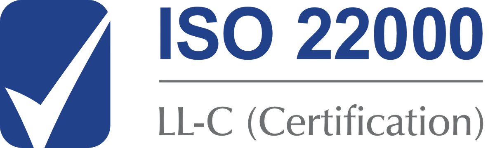

Quiénes somos
Más de 4 décadas de historia
PLASTISERVI es una empresa familiar chilena con más de 42 años de experiencia en el mercado del plástico, dedicada a la fabricación de bolsas de polietileno, cañerías de baja y alta densidad, tubos de PVC y reciclaje de distintos tipos de polímeros.
Nuestra historia
De reciclar polietileno a más de 1.000 toneladas al mes
En 1984 nace PLASTISERVI, con el propósito de reciclar polietileno flexible y comercializar la materia prima producida. Debido al rápido crecimiento y al interés por satisfacer las demandas de los clientes, PLASTISERVI comienza a desarrollar productos plásticos, llegando a un nivel de producción y variedad que supera las 1.000 toneladas mensuales.
La constante preocupación por mejorar sus procesos y entregar productos de calidad con los más altos estándares del mercado, le ha permitido renovar sus certificaciones y mantener una sana relación comercial con sus clientes.

NUESTRA MISIÓN
Calidad certificadaDesarrollamos una gran variedad de productos plásticos, cumpliendo con los más altos estándares de calidad, de acuerdo a las ISO 9001:2015, ISO 22000: 2018 e ISO-CASCO 5 realizada por CESMEC, para así garantizar la satisfacción de nuestros clientes.
NUESTRA VISIÓN
Variedad y sostenibilidadSer la empresa que provee, de forma confiable, la mayor variedad de productos plásticos del mercado chileno, promoviendo e impulsando una economía sostenible.
SEDES
San Miguel y San BernardoBolsas y mangas de polietileno en Santa Rosa 4525, San Miguel. Tubos PVC, cañerías y reciclaje en Camino Los Pinos 03496, San Bernardo.

Gobierno corporativo
Código de Ética y Conducta
Trabajamos de manera transparente y dentro de la normativa. Conoce nuestro Código de Ética y Conducta (versión 2026).
Descargar Código de Ética (PDF) ↓Conócenos
Conoce Plastiservi:
plástico con propósito
Más de 42 años fabricando y reciclando plástico en Chile. Mira quiénes somos y por qué trabajamos para disminuir el impacto del plástico en el planeta.

Calidad
Nuestras certificaciones



ISO 9001:2015 · ISO 22000:2018 · ISO-CASCO 5 realizada por CESMEC – Bureau Veritas
Contacto
¿Tienes un proyecto?
Cuéntanos qué necesitas y te respondemos a la brevedad. Sin compromiso.
Solicitar cotización →